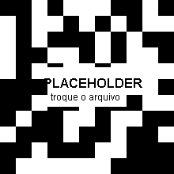

Agora você é o treinador da Seleção Brasileira.
Convoque agora a seleção para a Copa de 2030!
No celular, use Compartilhar… para mandar a imagem direto pro app. No computador, baixe a imagem e anexe. O Instagram só aceita post pelo celular — baixe e publique por lá.
